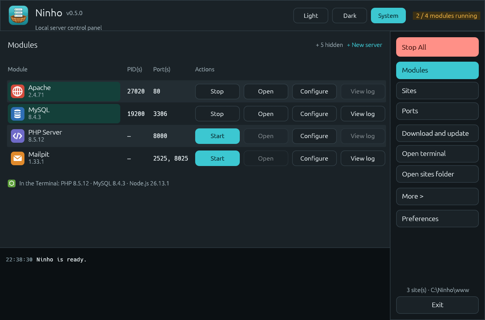

Your local server for Windows, in one small file
Ninho starts Apache, MySQL, MariaDB, PostgreSQL, PHP, Node.js, Mailpit and Redis from one control panel, and downloads the newest stable version of each from the official sites. Free and open source.

What it does
Everything a PHP, WordPress, Laravel or Node.js project needs on your PC, without an installer and without a single setting to edit by hand.
One file, no installer
Open Ninho.exe from any folder or a USB stick. Its settings stay in ninho.json beside it. Prefer the Start menu? One click installs it, no administrator needed.
Newest stable versions
Download and update reads windows.php.net, MySQL, MariaDB, PostgreSQL, nodejs.org and GitHub, and installs side by side with what you already have.
Every site gets an address
Each folder in www opens at http://name.test, with HTTPS from a local certificate authority when you want it.
See every port
Who holds port 80 or 3306, which ports Windows keeps for itself, and a safe Stop button for the rest.
More than one of each
Two MySQL servers with their own data, several PHP servers, another Redis, each on its own port.
Share a site
A public https link to any local site in one click, with a QR code for your phone.
Databases
Back up, restore and import .sql files, and open Adminer or HeidiSQL from the MySQL row.
Come from XAMPP, WampServer or Laragon
Ninho finds them and copies your sites and databases. The old install is only read, never changed.
Updates itself
A new Ninho shows up in the header. It downloads, checks the SHA-256 and restarts on the new version.
Made for AI agents too
Ninho.exe mcp is a Model Context Protocol server, so coding agents can start servers and read status.
18 languages
English, Português, Español, Français, Deutsch, Italiano, Nederlands, Polski, Русский, Українська, Türkçe, Bahasa Indonesia, Tiếng Việt, 日本語, 한국어, 简体中文, 繁體中文, हिन्दी.
Light and dark
Follows Windows or stays the way you pick. Closing the window keeps Ninho next to the clock.
Quick start
About two minutes from download to your first page.
- Download Ninho.exe from the latest release and put it in a folder such as
C:\Ninho. - Open it. The welcome window asks for your language and what to download now (Apache, PHP and MySQL come checked).
- Click Start all, put a project folder in
wwwand openhttp://your-folder.test.
Prefer the terminal?
winget install Phmrmkv.Ninho scoop install ninho Ninho.exe status --json Ninho.exe start mysql
Questions
Is it really free?
Yes. Ninho is open source under MIT or GPL-3.0, your choice, with no paid version and no account.
Windows says it protected my PC. Is it safe?
That warning shows for new programs that are not signed yet. Every release publishes the SHA-256 of each file, and the code is on GitHub for anyone to read and build.
Can I keep my XAMPP, WampServer or Laragon?
Yes. Ninho only reads them when you import, and it uses free ports when theirs are busy.
Does it need administrator rights?
No. Windows asks only when Ninho writes the .test addresses to the hosts file.
Linux and macOS?
Windows comes first. The plan for Linux and macOS is in the roadmap.